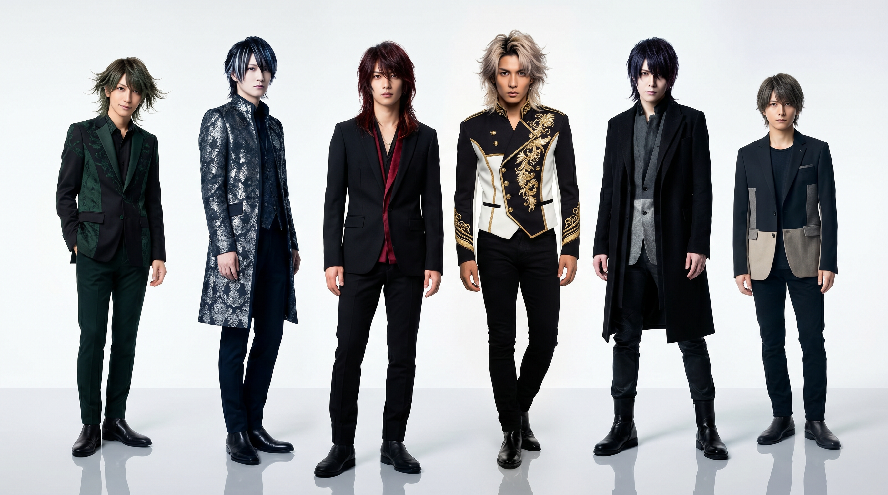
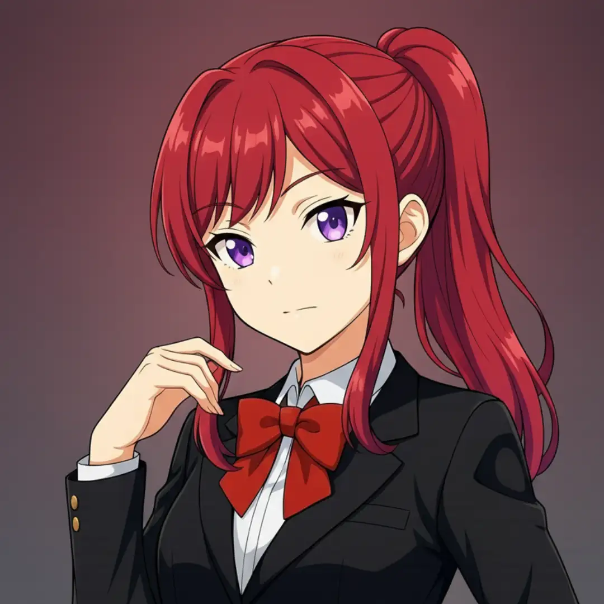

01
NOIR RIOT
Y2Kの熱量をまとう、6人の男性アイドル。Instagram開始3ヶ月でフォロワー2万人超。リールの月間再生数は約1,000万回。
まだない世界に、
物語と、命を。
企画・脚本・世界観設計から、
AIとともに、新しいエンターテインメントをつくる。

Y2Kの熱量をまとう、6人の男性アイドル。Instagram開始3ヶ月でフォロワー2万人超。リールの月間再生数は約1,000万回。
奪われた歌を追う怪盗たちのダークファンタジー。脚本からキャラクター、楽曲、演出までを一貫して制作。
SNSの光と影、心の崩壊と再生。「病みかわいい」世界に物語を重ねた、AI-VFXミュージックビデオ。
映像から漫画へ。AIを活用した漫画制作の実績。
めちゃコミック クリエイターズ 掲載作品

AI IP開発クリエイター / 映像ディレクター
企画・脚本・世界観設計を出発点に、オリジナルIPと映像を制作。AIアニメ、実写MV、漫画など、表現の領域を横断して活動しています。
つくりたいのは、映像の美しさだけではなく、その先に続く物語と感動。キャラクターが生きる世界を、構想から作品へと育てていきます。
CREATIVE PARTNERNCG ENTERTAINMENT™ ↗パートナー契約（非専属）Special Award
特別賞 受賞
1次審査通過
2次審査通過
Yami Kawaii Nove
映像・アニメーション・音楽の制作を通じて、複数のAIツールのクリエイタープログラムで活動。
上記のツールなどで、クリエイター活動を展開。
物語の核とキャラクターの個性を組み立て、作品の方向性をつくる。プロのシナリオライターとしての活動実績あり。
表現に合わせて手法を選び、演出・映像・音楽をひとつの体験へ。商業アニメの制作チームに参画経験あり。
リールを起点にNOIR RIOTをゼロから立ち上げ、フォロワー2万人超へ。思わずシェアしたくなる一場面と、推しの続きを追いたくなる世界観・ドラマをつくる。
IP開発、映像制作、クリエイティブのご相談。
Googleフォームにご記入いただくか、XのDMでお声がけください。